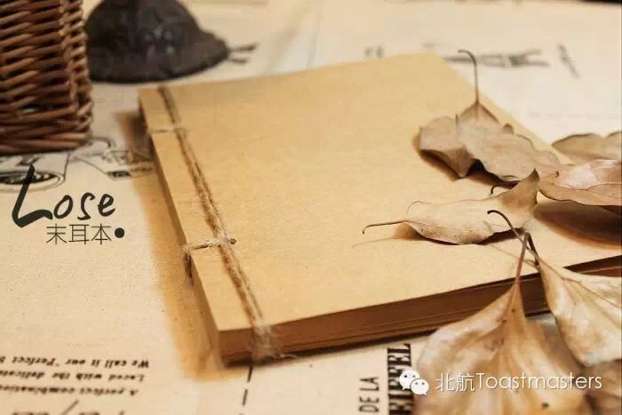
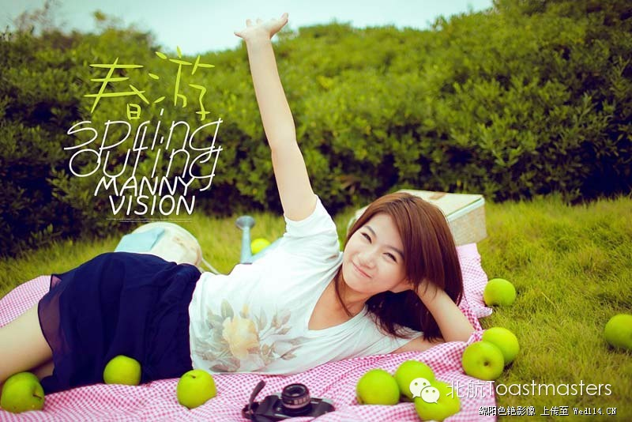

Your Moon and My Heart
Time: 19:30-21:30, Friday, April. 10
Venue: Room B208, New Main Building, Beihang University
Toastmaster: Vicky
Table Topic Master: Jack
Many of our guys have engaged in a relationship;Love is unforgettable and it can bring happiness as well as pain. When two people get together,problems do appear.
Still bothered by troubles in a relationship? Don't worry, in this week's meeting ,we will bring you a talk show which is specially for solving emotional problems;Some of you may have heard about it in IPARTMENT ---"your moon and my heart"
So let's start today's table topic section and learn more about your moon and my heart !
Prepared Speech
Cry with someone's company
cc2 Joy
Life is like an onion : You peel it off one layer at a time , and sometimes you weep. When you weep ,don't forget there are someones who would like to listen to you and console you sincerely. So don't weep alone ,weep with someone's company. Let's welcome a beautiful girl Joy to give her speech--cry with someone's company.
Prepared Speech
To keep a spiritual diary
cc5 Lucia
How long haven't you keep a diary? In nowaday quick pace life, people tend to forget looking inside themselves and just rush into another day. Have you ever imagine how better you will feel if you keep a spiritual diary? So let's welcome our intelligent lady, Lucia , to talk about keeping a spiritual diary.

Prepared Speech
My trip in the Qingming festival
cc1 Nancy
Holidays and festivals are always a good time to take a relax . Qingming festival had just passed, you may have done something different to spend this 3-day holiday.It is said that" body and sole must have a in the road". Let's welcome Nancy to share with us her unforgettable trip in Qingming festival.

Map
Our meeting venue changed to RoomB208, New Main Building, Beihang University (北航新主楼B208房间). And you can phone to Keven for help.
TEL: 15810539853
See you in the meeting!

https://mp.weixin.qq.com/s/DFo4tVZlCOFiuM1pjpM0qQ
本页为抢救式本地归档，图文已永久保存。